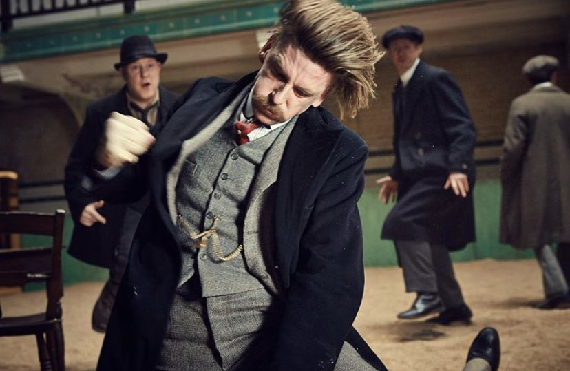

Carros

Ceará tem potencial para avanços no mercado de carro elétrico
Com um mercado em crescimento, as vendas de veículos eletrificados aumentaram 114% no primeiro semestre de 2021 em comparação com mesmo período do ano anterior no Ceará. Os dados da Associação Brasileira do Veículo Elétrico (ABVE) demonstram que somente neste ano 248 unidades foram emplacadas no estado. O segmento de automóveis registrou um aumento de 48% com 102 unidades vendidas, já o de comerciais leves aumentaram de 47 para 146 (210%), puxados principalmente pelos veículos utilitários. *Leia mais
Cinema

Arthur Shelby Pisa em merda da mãe de figura importante em uma comunidade e foi decapitado por traficantes.
Arthur Shelby Pisa em merda da mãe de figura importante em uma comunidade e foi decapitado por traficantes bem humorados, com a itenção de se beneficiar com olucro de bilheteria no ultimo filme da hollywod, que diz que o Oscar vai fazer parte de discursos da ONU que sempre visaram o cinema antigo que era muito bom na época de 1900 o cinema começou a bombar e pessoas amavam.
Futebol

FIFA entrega taça do Campeonato Mundial de Clubes para Palmeiras
Times que estavam disputando o Campeonato Mundial de Clubes se reuniram na tarde desta quinta-feira(09) em reunião extraordinária da FIFA para discutir sobre a possibilidade de desistência para poupar jogadores de humilhação, com a notória superioridade do time brasileiro. O time inglês Chelsea foi o mais relutante sobre o assunto, porém no final cedeu com intercessão do presidente do clube, Já Roman Abramovich, que se pronunciou dizendo: "Tenho total confiança em meus jogadores, porém não vou correr o risco dela(Leila Mejdalani Pereira, presidente do Palmeiras) se irritar com a derrota do time e comprar o Chelsea." *Leia mais
Fofocas

Michael Jackson está vivo
Nossos repórteres conseguiram informações que o cantor e Rei do Pop Michael Jackson está vivo, trocou de rosto e agora é conhecido como Bruno Mars
Presidente

Nosso Presidente Bolsonaro
O presidente alega não ter sido vacinado, o que o impede de entrar em diversos estabelecimentos da cidade, que exigem comprovação de vacinação. Ministro do Turismo publicou foto em que parte da comitiva come pizza em uma calçada.
Com as rígidas restrições em locais públicos de Nova York por causa da pandemia de covid-19, o presidente Jair Bolsonaro (sem partido) e seus ministros tiveram a primeira refeição em solo americano no meio da rua. O presidente está nos Estados Unidos para participar da 76ª Assembleia-Geral da ONU, que começa na próxima terça (21).